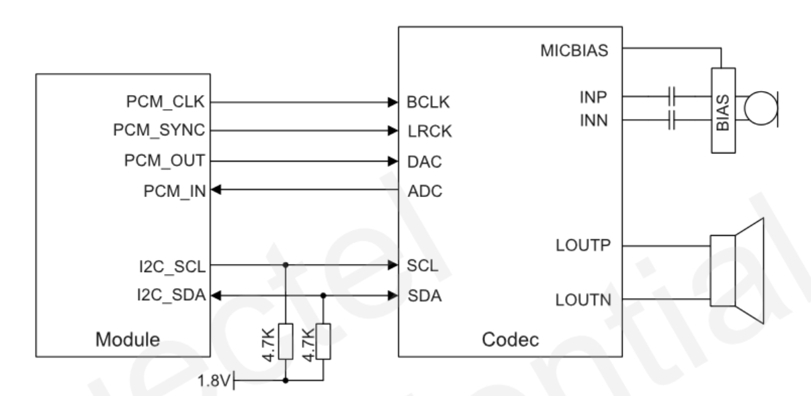

PCM interface
PCM interface
There are two PCM interface.
But the primary PCM is set to SPI mode by default.
Primary PCM
PinName |
PIN Num |
default Function |
Function1 |
Function2 |
Function3 |
Function4 |
|---|---|---|---|---|---|---|
SPI_CS_N |
37 |
SPI_CS_N_BLSP6 |
PCM_IN |
I2S_IN |
GPIO22 |
UART_RTS_BLSP6 |
SPI_CS_N |
38 |
SPI_MOSI_BLSP6 |
PCM_OUT |
I2S_OUT |
GPIO20 |
UART_TXD_BLSP6 |
SPI_CS_N |
39 |
SPI_MISO_BLSP6 |
PCM_SYNC |
I2S_WS |
GPIO21 |
UART_RXD_BLSP6 |
SPI_CS_N |
40 |
SPI_CLK_BLSP6 |
PCM_CLK |
I2S_CLK |
GPIO23 |
UART_CTS_BLSP6 |
Secondary PCM
PinName |
PIN Num |
defaultFunction |
Function1 |
Function2 |
|---|---|---|---|---|
PCM_IN |
24 |
PCM_IN |
I2S_IN |
GPIO76 |
PCM_OUT |
25 |
PCM_OUT |
I2S_OUT |
GPIO77 |
PCM_SYNC |
26 |
PCM_SYNC |
I2S_WS |
GPIO79 |
PCM_CLK |
27 |
PCM_CLK |
I2S_CLK |
GPIO78 |
PCM reference design

CodeC Supported
The CodeC have tried
QDAI |
CodeC |
|---|---|
1 |
Digital PCM out |
2 |
NAU8814 |
3 |
ACL5616 |
4 |
MAX9860 |
5 |
TLV320ALC3104 |
6 |
NAU88C10/NAU88U10 |
7 |
MAX9867 |
8 |
ALC5660 |
9 |
ALC5616E |
10 |
ES8311 |
11 |
ES8374 |
12 |
ES838 |